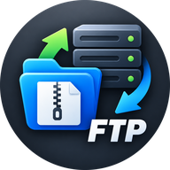

APP UP
FTP Manager
接続
未接続
サーバ管理
設定
ロック
Local
↑
⟳
＋フォルダ
取り込み
フォルダ取込
解凍
コピー
切り取り
貼り付け
名前変更
削除
端末に保存
アップロード →
すべて選択
ここにファイルをドロップして取り込み
Server
↑
⟳
＋フォルダ
コピー
切り取り
貼り付け
名前変更
削除
DLして解凍
← ダウンロード
すべて選択
サーバに接続してください
クリア
Local
Server
APP UP FTP Manager
ロック解除
バックアップから復元
初期化
サーバ管理
×
＋ サーバを追加
表示名
ホスト
暗号化
FTPS 明示的TLS（推奨）
FTPS 暗黙的TLS
FTP 暗号化なし（非推奨）
ポート
ユーザー名
パスワード
初期フォルダ
自己署名証明書を許可する（非推奨）
暗号化なし FTP はパスワードと中身が平文で流れます。サーバが FTPS 非対応の場合のみ使ってください。
キャンセル
保存
設定
×
中継サーバのアクセストークン
自動ロック（分）
FTP パスワードを保存する（暗号化して保存）
保存
暗号化バックアップを保存
マスターパスワード変更
作業領域を空にする
キャンセル
OK